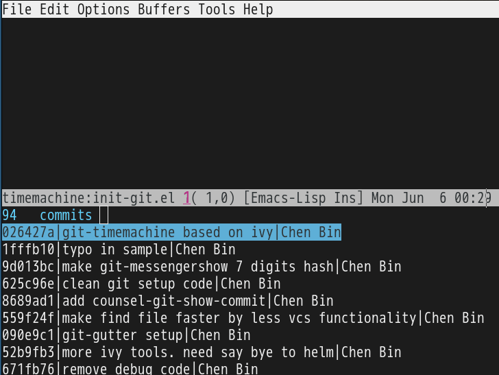
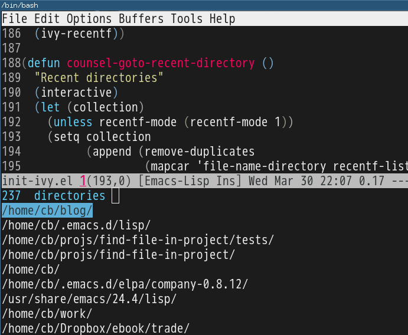

How to manage Emacs packages effectively
Here are a few techniques I developed after reading Steve Purcell's setup.
The techniques are compatible with use-package because it uses Emacs API.
Mid-level Lisp knowledge is required to read this article.
Do NOT use package.el for certain packages
Create the directory ~/.emacs.d/site-lisp. Then insert below code into ~/.emacs,
(if (fboundp 'normal-top-level-add-to-load-path)
(let* ((my-lisp-dir "~/.emacs.d/site-lisp/")
(default-directory my-lisp-dir))
(progn
(setq load-path
(append
(loop for dir in (directory-files my-lisp-dir)
unless (string-match "^\\." dir)
collecting (expand-file-name dir))
load-path)))))
You can place a package's source code at sub-directory of ~/.emacs.d/site-lisp/. That's all you need to do to install packages.
Create your own package repository
Step 1, Place two files "archive-contents" and "hello-1.0.0.el" in any directory. Say ~/.emacs.d/localelpa.
Here is the content of archive-contents:
(1
(hello . [(1 0 0) nil "Say hello" single])
)
Here is the content of hello-1.0.0.el:
;;;###autoload
(defun hello-say ()
(interactive)
(message "Hi, hello!"))
(provide 'hello)
Step 2, insert below code into ~/.emacs,
(add-to-list 'package-archives '("localelpa" . "~/.emacs.d/localelpa"))
Step 3, restart Emacs and run M-x list-packages. As you can see, you can install package named "hello" now!
Here is a real world example how I apply this technique. I use rainbow-mode from https://elpa.gnu.org/ which shuts down sometimes. So I built a local repository to host rainbow-mode and a few other packages to remove dependency on GNU site.
I also create a elpa-mirror which creates a local repository from the installed packages. This local repository could be converted to remote repository using Dropbox and Github easily.
Orphan package issue is also resolved by elpa-mirror. You can delete everything from ~/.emacs.d/elpa and set the repository to the local repository created by elpa-mirror. It only takes 30 seconds to install 300 packages.
Advice package--add-to-archive-contents to filter packages
Insert below code into ~/.emacs,
;; List of VISIBLE packages from melpa-unstable (http://melpa.org)
;; Feel free to add more packages!
(defvar melpa-include-packages
'(bbdb
color-theme
company-c-headers)
"Don't install any mELPA packages except these packages")
(defvar package-filter-function nil
"Optional predicate function used to internally filter packages used by package.el.
The function is called with the arguments PACKAGE VERSION ARCHIVE, where
PACKAGE is a symbol, VERSION is a vector as produced by `version-to-list', and
ARCHIVE is the string name of the package archive.")
;; Don't take MELPA versions of certain packages
(setq package-filter-function
(lambda (package version archive)
(or (not (string-equal archive "melpa"))
;; install package in whitelist
(memq package melpa-include-packages)
;; use all color themes
(string-match (format "%s" package) "-theme"))))
(defadvice package--add-to-archive-contents
(around filter-packages (package archive) activate)
"Add filtering of available packages using `package-filter-function', if non-nil."
(when (or (null package-filter-function)
(funcall package-filter-function
(car package)
(funcall (if (fboundp 'package-desc-version)
'package--ac-desc-version
'package-desc-vers)
(cdr package))
archive))
ad-do-it))
The above code builds the filter defined in package-filter-function to get the final version of packages list.
The filter accepts the package if it's NOT from melpa-unstable OR it's listed in melpa-include-packages OR its name contains "-theme".
Surely you can build your own filter.
This solution is copied from Steve Purcell's setup with a little modification.
Summary
You can combine above techniques to solve any package issue.
For example, package A is dependent on package B. Both A and B have two versions, 1.0 and 2.0:
- A 2.0 can use B 1.0 and B 2.0, but A 1.0 can ONLY use B 1.0
- A 2.0 can ONLY use B 2.0, and A 1.0 can only use B 1.0
The solution is simple. We create a local repository to host B 1.0 and A 1.0. As I said, package-filter-function only returns a boolean expression. So you can design any strategy.
I know some one believs "Emacs package manager sucks" after mastering it for seven years. That's certainly not the truth as I have proved. I spent 15 minutes to reach the opposite conclusion when I was a Emacs dummy.
It's possibly I started my journey by learning from experts instead of "studiyng" by myself.
New git-timemachine UI based on ivy-mode
UPDATED:
CREATED:
When using git-timemachine, I prefer start from my selected revision instead of HEAD.
Here is my code based on ivy-mode,
(defun my-git-timemachine-show-selected-revision ()
"Show last (current) revision of file."
(interactive)
(let* ((collection (mapcar (lambda (rev)
;; re-shape list for the ivy-read
(cons (concat (substring-no-properties (nth 0 rev) 0 7) "|" (nth 5 rev) "|" (nth 6 rev)) rev))
(git-timemachine--revisions))))
(ivy-read "commits:"
collection
:action (lambda (rev)
;; compatible with ivy 9+ and ivy 8
(unless (string-match-p "^[a-z0-9]*$" (car rev))
(setq rev (cdr rev)))
(git-timemachine-show-revision rev)))))
(defun my-git-timemachine ()
"Open git snapshot with the selected version. Based on ivy-mode."
(interactive)
(unless (featurep 'git-timemachine)
(require 'git-timemachine))
(git-timemachine--start #'my-git-timemachine-show-selected-revision))
Screenshot after M-x my-git-timemachine,

Complete line with ivy-mode
Complete current line by git grep and ivy-mode.
(defun counsel-escape (keyword)
(setq keyword (replace-regexp-in-string "\\$" "\\\\\$" keyword))
(replace-regexp-in-string "\"" "\\\\\"" keyword))
(defun counsel-replace-current-line (leading-spaces content)
(beginning-of-line)
(kill-line)
(insert (concat leading-spaces content))
(end-of-line))
(defun counsel-git-grep-complete-line ()
(interactive)
(let* (cmd
(cur-line (buffer-substring-no-properties (line-beginning-position)
(line-end-position)))
(default-directory (locate-dominating-file
default-directory ".git"))
keyword
(leading-spaces "")
collection)
(setq keyword (counsel-escape (if (region-active-p)
(buffer-substring-no-properties (region-beginning)
(region-end))
(replace-regexp-in-string "^[ \t]*" "" cur-line))))
;; grep lines without leading/trailing spaces
(setq cmd (format "git --no-pager grep -I -h --no-color -i -e \"^[ \\t]*%s\" | sed s\"\/^[ \\t]*\/\/\" | sed s\"\/[ \\t]*$\/\/\" | sort | uniq" keyword))
(when (setq collection (split-string (shell-command-to-string cmd) "\n" t))
(if (string-match "^\\([ \t]*\\)" cur-line)
(setq leading-spaces (match-string 1 cur-line)))
(cond
((= 1 (length collection))
(counsel-replace-current-line leading-spaces (car collection)))
((> (length collection) 1)
(ivy-read "lines:"
collection
:action (lambda (l)
(counsel-replace-current-line leading-spaces l))))))
))
(global-set-key (kbd "C-x C-l") 'counsel-git-grep-complete-line)
I also tried grep which is too slow for my project.
Make Messages Buffer modifiable in Emacs 24.4
(defadvice switch-to-buffer (after switch-to-buffer-after-hack activate)
(if (string= "*Messages*" (buffer-name))
(read-only-mode -1)))
How to input Non-English character in evil-mode efficiently
You can M-x toggle-input-method or C-\ to input Non-English characters.
Analysis about evil-mode,
- You only input Non-English characters in evil-insert-state. So you need go into evil-insert-state at first before toggle on input method
- In evil-insert-state, you can toggle off input method to input English characters while staying in evil-insert state
- When press
ESC, you quit from evil-insert-state. But input method could be still activated. So when you re-enter evil-insert-state, you need notification of input method status
Here is the setup,
;; {{ make IME compatible with evil-mode
(defun evil-toggle-input-method ()
"when toggle on input method, goto evil-insert-state. "
(interactive)
;; load IME when needed, less memory footprint
;; (unless (featurep 'chinese-pyim)
;; (require 'chinese-pyim))
(cond
((and (boundp 'evil-mode) evil-mode)
;; evil-mode
(cond
((eq evil-state 'insert)
(toggle-input-method))
(t
(evil-insert-state)
(unless current-input-method
(toggle-input-method))
))
(if current-input-method (message "IME on!")))
(t
;; NOT evil-mode, some guy don't use evil-mode at all
(toggle-input-method))))
(defadvice evil-insert-state (around evil-insert-state-hack activate)
ad-do-it
(if current-input-method (message "IME on!")))
(global-set-key (kbd "C-\\") 'evil-toggle-input-method)
;; }}
Chinese version:
在evil-mode中切换输入法有以下要点,
- 输中文前须进入evil-insert-state
- 在evil-insert-state中可能会切换输入法
- 按ESC退出evil-insert-state时输入法可能还开着,所以再进入evil-insert-state时需提示输入法状态
代码见上.
Swiper/Ivy tip
Please install evil-escape at first.
When Swiper/Ivy candidate window pops up. You can press fd quickly to close the window.
fd is the default key binding from evil-escape. I changed it to kj instead.
Use general.el to provide multiple leader key in evil-mode
General.el "provides a more convenient way to bind keys in emacs for both evil and non-evil users".
I have been using it for more than one month without any issue. I prefer general.el to evil-leader because I need both comma and space key as leader key.
Minimum setup is simple,
(require 'general)
(general-evil-setup t)
(nvmap :prefix ","
"bb" 'back-to-previous-buffer
"ww" 'save-buffer
"oo" 'compile)
;; all keywords arguments are still supported
(nvmap :prefix "SPC"
; save windows layout
"ss" 'wg-create-workgroup
;; load windows layout
"ll" 'my-wg-switch-workgroup)
My real world setup is more complicated.
Use ivy to open recent directories
The recent directories include parent directories of opened files in Emacs and the directories accessed in Bash shell.
I used fasd to get the list of directories in shell. Fasd "offers quick access to files and directories for POSIX shells".
Here is my setup,
(require 'ivy) ; swiper 7.0+ should be installed
(defun counsel-goto-recent-directory ()
"Open recent directory with dired"
(interactive)
(unless recentf-mode (recentf-mode 1))
(let ((collection
(delete-dups
(append (mapcar 'file-name-directory recentf-list)
;; fasd history
(if (executable-find "fasd")
(split-string (shell-command-to-string "fasd -ld") "\n" t))))))
(ivy-read "directories:" collection :action 'dired)))
Screenshot:

Emacs vs Sublime Text on Salesforce development
Our client decided to move their legacy system to a cloud platform called salesforce.com. So I got a chance to investigate how to deploy code to the salesforce server inside Emacs and Sublime Text.
Salesforce provides a migration tool to deploy everything from the scratch which takes about 2 minutes. Basically makes it impossbile to be integrated with text editors.
Luckily, there is Force.com CLI which can upload single file in a few seconds. Both Sublime Text and Emacs use this tool.
Sublime Text
You need install sublime text plugin mavensmate. After installation, you need click Login menu at least once. Then when you save the code file, it's automatically deployed to the server.
For some reason, the logged in session will timeout after a couple minutes. So you need re-login. Sometimes deployment will fail, you could click the Fetch menu and fill in the component name into the popup window to confirm the fetch. Fetching will re-activate upload ability.
Mavensmate is actually just GUI wrapper of Force.com CLI,
- When you click login, the command
force loginis executed - When saving file,
force aura pushorforce pushis executed - When fetching,
force fetchis executed
Emacs
In Sublime Text I have to re-login and fetch from time to time. That get me distracted. I prefer executing only one commmand to upload the file in editing. That command should be always successful.
My solution is to combine "login/fetch/push" commnands into one liner which is stored in a file local variable compile-command. So when I execute M-x compile, the commands "login/fetch/push" in compile-command will all be executed sequentially. So I don't need care about login and fetch things any more.
Here is my setup,
(defun my-setup-develop-environment ()
(interactive)
(let (ffip-project-root)
(setq ffip-project-root "~/projects/my-salesforce-project1")
(when (memq major-mode '(web-mode js-mode js2-mode))
(setq-local compile-command
(cond
;; lightning controller javascript file
((string-match "Controller\.js$" (buffer-file-name))
(format "force login -i=test -u=username@salesforce.com -p=password1; cd %s && cp %s %s && force fetch -t Aura -n %s -d %s && mv %s %s && force aura push -f %s"
ffip-project-root
(buffer-file-name) (concat (buffer-file-name) ".bak")
(replace-regexp-in-string "Controller" "" (file-name-base (buffer-file-name)))
ffip-project-root
(concat (buffer-file-name) ".bak") (buffer-file-name)
(buffer-file-name)))
;; ant build
((string-match "build\.xml$" (buffer-file-name))
(format "cd %s && ant deployCode" ffip-project-root))
;; lightning html view
((string-match "\.cmp$" (buffer-file-name))
(format "force login -i=test -u=username@salesforce.com -p=password1; cd %s && force aura push -f %s"
ffip-project-root
(buffer-file-name)))
;; other salesforce pages
(t
(format "force login -i=test -u=username@salesforce.com -p=password1; cd %s && force push -f %s"
ffip-project-root
(buffer-file-name)))
)))
))
;; I use web-mode for html/xml
(add-hook 'web-mode-hook 'my-setup-develop-environment)
;; I use js2-mode for javascript
(add-hook 'js2-mode-hook 'my-setup-develop-environment)
How to be extremely efficient in Emacs
You only need keyfreq to find frequently used commands.
The frequently used commands should be assigned efficient key bindings.
But you need exclude already optimized commands or commands which cannot be optimized before starting keyfreq.
For example, commands like next-line/previous-line/forward-char/backward-char could be excluded by tweaking variable keyfreq-excluded-commands.
The minimum keyfreq setup,
(require 'keyfreq)
(setq keyfreq-excluded-commands
'(self-insert-command
abort-recursive-edit
forward-char
backward-char
previous-line
next-line))
(keyfreq-mode 1)
(keyfreq-autosave-mode 1)
My actual keyfreq setup is more complicated.
Below is the eight month keyfreq data of my office computer,
| Times | Percentage | Command | Key |
|---|---|---|---|
| 4967 | 12.00% | evilmi-jump-items | % |
| 2892 | 6.99% | compile | , o o |
| 2178 | 5.26% | find-file-in-project-by-selected | , k k |
| 1953 | 4.72% | copy-to-x-clipboard | , a a |
| 1566 | 3.78% | paste-from-x-clipboard | , z z |
| 1227 | 2.96% | er/expand-region | , x x |
| 897 | 2.17% | evil-repeat | . |
| 866 | 2.09% | ido-find-file | , x f, C-x C-f |
| 819 | 1.98% | toggle-full-window | , f f |
| 815 | 1.97% | etags-select-find-tag-at-point | C-], , h t |
| 721 | 1.74% | back-to-previous-buffer | , b b |
| 682 | 1.65% | split-window-vertically | , x 2 |
| 539 | 1.30% | find-function | , h f, C-h C-f |
| 494 | 1.19% | counsel-recentf-goto | , r r |
| 397 | 0.96% | counsel-git-grep | , g g |
| 376 | 0.91% | delete-other-windows | , x 1, C-x 1 |
| 372 | 0.90% | evilnc-comment-or-uncomment-lines | , c i |
| 351 | 0.85% | eval-expression | , e e, M-: |
| 326 | 0.79% | evilmi-select-items | , s i |
| 320 | 0.77% | paredit-doublequote | |
| 307 | 0.74% | evil-filepath-outer-text-object | |
| 300 | 0.72% | steve-ido-choose-from-recentf | |
| 295 | 0.71% | split-window-horizontally | , x 3 |
| 283 | 0.68% | git-add-current-file | , x v a |
| 279 | 0.67% | winner-undo | , x u, , s u, C-x 4 u |
| 278 | 0.67% | describe-function | , h d, C-h f |
| 278 | 0.67% | evil-goto-mark-line | ' |
| 269 | 0.65% | ido-kill-buffer | , x k, C-x k |
| 254 | 0.61% | evil-goto-definition | g d |
| 253 | 0.61% | pop-tag-mark | M-* |
| 251 | 0.61% | git-messenger:popup-message | , x v b, C-x v p |
| 246 | 0.59% | my-goto-next-hunk | , n n |
| 237 | 0.57% | evilnc-comment-operator | , , |
| 235 | 0.57% | flyspell-goto-next-error | , f e, C-, |
| 214 | 0.52% | evil-exit-emacs-state | |
| 212 | 0.51% | browse-kill-ring-forward | |
| 210 | 0.51% | flyspell-buffer | , f b |
| 203 | 0.49% | evil-ex-completion | |
| 195 | 0.47% | narrow-or-widen-dwim | , x n n |
| 173 | 0.42% | comint-send-input | |
| 173 | 0.42% | beginning-of-defun | , b f |
| 170 | 0.41% | evil-surround-region | <visual-state> S |
| 161 | 0.39% | hippie-expand | M-/ |
| 151 | 0.36% | describe-key | , h k, C-h k |
| 149 | 0.36% | evil-space–evil-next-visual-line | SPC |
| 139 | 0.34% | gnus-topic-select-group | |
| 138 | 0.33% | js2-print-json-path | , j p p |
| 132 | 0.32% | goto-line | M-g g, M-g M-g |
| 132 | 0.32% | evil-avy-goto-subword-1 | ; |
| 127 | 0.31% | ibuffer-mark-for-delete | |
| 127 | 0.31% | evil-inner-single-quote | |
| 126 | 0.30% | isearch-other-meta-char | |
| 124 | 0.30% | term-send-up | |
| 118 | 0.29% | isearch-other-control-char | |
| 116 | 0.28% | evil-set-marker | m |
| 115 | 0.28% | browse-kill-ring | M-y, , y y |
| 114 | 0.28% | counsel-git-grep-yank-line | , g l |
| 114 | 0.28% | evil-window-down | C-w j |
| 112 | 0.27% | evil-jump-backward | C-o |
| 108 | 0.26% | evil-visual-block | C-v |
| 108 | 0.26% | evil-space–evil-previous-visual-line | S-SPC |
| 107 | 0.26% | comint-previous-input | |
| 98 | 0.24% | gnus-summary-exit | |
| 98 | 0.24% | evil-search-word-backward | # |
| 98 | 0.24% | forward-button | |
| 96 | 0.23% | evil-paste-pop-next | |
| 95 | 0.23% | ediff-next-difference | |
| 95 | 0.23% | ido-imenu | , i i |
| 92 | 0.22% | my-wg-switch-workgroup | , w g g |
| 90 | 0.22% | counsel-git-find-file | , g f |
| 90 | 0.22% | evilmi-delete-items | , d i |
| 87 | 0.21% | gnus-summary-extract-mail-address | |
| 87 | 0.21% | cliphist-paste-item | , h h |
| 84 | 0.20% | subword-backward-kill | <C-backspace> |
| 84 | 0.20% | paredit-backslash | |
| 83 | 0.20% | my-yas-reload-all | , y c r |
| 81 | 0.20% | pwd | |
| 80 | 0.19% | previous-complete-history-element | |
| 80 | 0.19% | wg-create-workgroup | , w g t |
| 78 | 0.19% | evil-forward-WORD-end | E |
| 77 | 0.19% | gnus-summary-scroll-up | |
| 76 | 0.18% | gnus-summary-extract-cc-and-to | |
| 75 | 0.18% | compile-goto-error | |
| 73 | 0.18% | evil-find-char-to | t |
| 72 | 0.17% | evil-repeat-find-char | |
| 69 | 0.17% | evil-window-up | C-w k |
| 67 | 0.16% | eval-last-sexp | , x e, C-x C-e |
| 66 | 0.16% | evil-complete-next-line | |
| 66 | 0.16% | exchange-point-and-mark | C-x C-x |
| 63 | 0.15% | direx:previous-item | |
| 61 | 0.15% | ediff-jump-to-difference | |
| 60 | 0.14% | diredp-next-line | |
| 58 | 0.14% | evilmr-replace-in-buffer | , r b |
| 58 | 0.14% | counsel-imenu-goto | , i m |
| 56 | 0.14% | evil-goto-mark | ` |
| 55 | 0.13% | gnus-group-unsubscribe-current-group | |
| 55 | 0.13% | ivy-bookmark-goto | |
| 55 | 0.13% | evil-filepath-inner-text-object | |
| 54 | 0.13% | describe-mode | C-h m |
| 54 | 0.13% | recenter-top-bottom | C-l |
| 54 | 0.13% | list-packages | |
| 52 | 0.13% | gnus-topic-mark-topic | |
| 52 | 0.13% | kill-line | C-k, <deleteline> |
| 51 | 0.12% | find-and-ctags-update-all-tags-force | |
| 50 | 0.12% | evil-paste-before | P |
| 49 | 0.12% | execute-extended-command | <execute>, C-x RET |
| 49 | 0.12% | etags-select-quit | |
| 49 | 0.12% | evil-inner-WORD | |
| 48 | 0.12% | find-tag | g C-] |
| 47 | 0.11% | diredp-previous-line | |
| 46 | 0.11% | paredit-close-square | |
| 44 | 0.11% | paredit-open-square | |
| 44 | 0.11% | evil-paste-last-insertion | |
| 42 | 0.10% | evil-inner-double-quote | |
| 42 | 0.10% | ivy-imenu-goto | |
| 40 | 0.10% | counsel-git-find-my-file | , g m |
| 39 | 0.09% | cp-filename-of-current-buffer | , f n |
| 39 | 0.09% | gnus-article-read-summary-keys | |
| 39 | 0.09% | isearch-nonincremental-exit-minibuffer | |
| 38 | 0.09% | sh-assignment | |
| 38 | 0.09% | mark-whole-buffer | , x h, C-x h |
| 38 | 0.09% | evilmi-inner-text-object | |
| 36 | 0.09% | evilnc-comment-or-uncomment-paragraphs | , c p, C-c p |
| 36 | 0.09% | evil-toggle-input-method | C-\ |
| 35 | 0.08% | org2nikola-export-subtree | |
| 35 | 0.08% | subword-forward | M-f, ESC <right> |
| 34 | 0.08% | evil-open-above | O |
| 34 | 0.08% | compose-mail | C-x m |
| 33 | 0.08% | evil-inner-paren | |
| 33 | 0.08% | term-send-raw-meta | |
| 33 | 0.08% | evil-invert-char | ~ |
| 32 | 0.08% | evil-space–evil-repeat-find-char | |
| 32 | 0.08% | httpd-restart-at-default-directory | , w r d |
| 32 | 0.08% | cp-fullpath-of-current-buffer | , f p |
| 31 | 0.07% | evil-forward-WORD-begin | W |
| 30 | 0.07% | sort-lines | , s l |
| 30 | 0.07% | bmkp-w3m-jump | |
| 30 | 0.07% | evilnc-copy-and-comment-lines | , c c, C-c c |
| 29 | 0.07% | toggle-company-ispell | , t c i |
| 29 | 0.07% | top-level | |
| 28 | 0.07% | package-menu-mark-upgrades | |
| 27 | 0.07% | evil-numbers/dec-at-pt | - |
| 27 | 0.07% | end-of-defun | , e f, C-M-e |
| 27 | 0.07% | my-setup-develop-environment | |
| 26 | 0.06% | evil-paste-pop | |
| 25 | 0.06% | ediff-previous-difference | |
| 25 | 0.06% | evil-backward-WORD-begin | B |
| 25 | 0.06% | goto-char | g o, M-g c |
| 25 | 0.06% | w3m-close-window | |
| 25 | 0.06% | org-mime-htmlize | |
| 25 | 0.06% | gnus-group-exit | |
| 24 | 0.06% | git-gutter:toggle | C-x C-g |
| 23 | 0.06% | my-gnus-group-list-subscribed-groups | |
| 23 | 0.06% | find-directory-in-project-by-selected | , f d |
| 23 | 0.06% | evil-inner-curly | |
| 22 | 0.05% | org-edit-src-exit | |
| 22 | 0.05% | string-edit-at-point | , s e |
| 22 | 0.05% | package-menu-mark-delete | |
| 22 | 0.05% | ido-magic-forward-char | |
| 22 | 0.05% | run-js | , r j s |
| 22 | 0.05% | git-gutter-reset-to-head-parent | , g s h |
| 21 | 0.05% | counsel-read-history | |
| 21 | 0.05% | rcirc-send-input | |
| 21 | 0.05% | gnus-undo | |
| 21 | 0.05% | subword-backward | M-b |
| 20 | 0.05% | company-select-next | |
| 20 | 0.05% | what-cursor-position | g a, g 8, C-x = |
| 20 | 0.05% | my-grep | , q q |
| 20 | 0.05% | hydra-gnus-summary/body | |
| 19 | 0.05% | ansi-term | |
| 19 | 0.05% | evil-window-right | C-w l |
| 19 | 0.05% | debugger-jump | |
| 19 | 0.05% | wg-switch-to-workgroup | |
| 19 | 0.05% | yas-abort-snippet | |
| 19 | 0.05% | tags-loop-continue | M-, |
| 19 | 0.05% | swiper-the-thing | , s s |
| 18 | 0.04% | my-wg-swich-to-workgroup | |
| 18 | 0.04% | org-edit-special | |
| 17 | 0.04% | lisp-complete-symbol | |
| 17 | 0.04% | my-wg-switch-to-workgroup-at-index | |
| 17 | 0.04% | test | |
| 17 | 0.04% | ediff-scroll-vertically | |
| 16 | 0.04% | w3m-view-previous-page | |
| 16 | 0.04% | evil-window-left | C-w h |
| 16 | 0.04% | isearch-yank-kill | |
| 16 | 0.04% | my-goto-previous-hunk | , p p |
| 16 | 0.04% | js-beautify | , j b |
| 16 | 0.04% | hydra-launcher/body | |
| 16 | 0.04% | read-only-mode | C-x C-q |
| 16 | 0.04% | message-send-and-exit | |
| 16 | 0.04% | etags-select-goto-tag | |
| 15 | 0.04% | evil-next-match | g n |
| 15 | 0.04% | js2r-kill | , j j k |
| 15 | 0.04% | string-edit-conclude | |
| 15 | 0.04% | delete-char | |
| 14 | 0.03% | gnus-summary-limit-to-author | |
| 14 | 0.03% | ediff-swap-buffers |